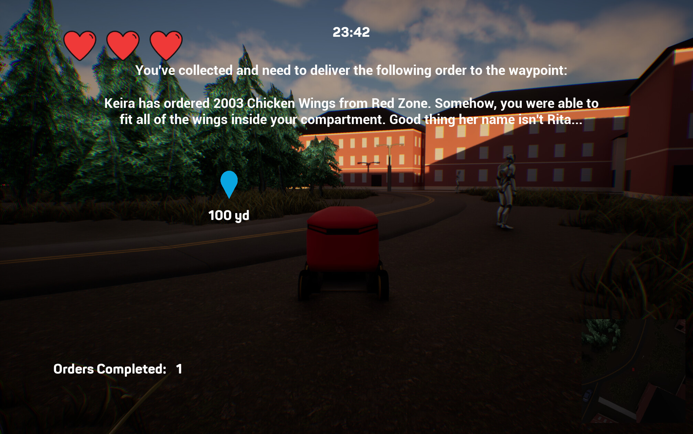

Projects
Take a look at the projects I've worked on!
Code Redhawk
Code Redhawk is a full-stack web application enabling instructors to create coding problems and problem sets, and students to submit solutions with immediate feedback.
The platform streamlines administrative tasks and integrates AI for content generation, fostering an engaging learning environment.
I helped set up the backend by establishing a TCP connection to a MySQL database and building an HTTP server using Node.js.
I also designed the database schema and containerized the entire backend — including MySQL, Flask, and Node.js — using Docker.
This allows the application to run consistently on any device and enables devices on the network to connect to the HTTP server.
During development, I ran into an error: "Error connecting to MySQL: Error: connect ECONNREFUSED 255.255.0.0:3306" (fake IP address used for privacy).
After extensive debugging and research, I found out this was because the Node.js backend was trying to connect to the MySQL container using "localhost", which refers to the Node container itself, and not the actual MySQL container.
Updating the host to "mysql" (the name of the MySQL service in Docker Compose) resolved the issue by correctly routing the connection to the database within the Docker network. It was a tricky issue to identify, as the error message didn't clearly indicate the root cause.
Our team collaborated using GroupMe for communication, GitLab to track issues and manage development tasks, and Zoom meetings to debug any major problems. We also met biweekly with our client and class instructor to gather feedback and stay aligned with Agile methodology.
This project is intended to run locally or in a controlled environment. A public demo is not currently available but is planned once hosting infrastructure is in place.

Bell Bot
Bell Bot is one of the games I helped develop through Game Design Club, created over the span of four months primarily during club meetings.
I served as theproject lead, where I proposed the original concept: "What if we made an open-world game where you control a Starship robot on Miami's campus?"
The idea sparked interest, and I assembled a team of 15 club members to bring it to life.
As the lead, I was responsible for programming core gameplay logic - such as player movement, death conditions, and the system for completing or failing delivery orders - as well as designing levels and integrating assets into the game.


I coordinated tasks with team members who handled UI, AI behavior, 3D modeling, music composition, and narrative design. I communicated with the team primarily through Discord and weekly club meetings to track progress.
One technical challenge I encountered was recurring asset loss and version control errors when pulling from Git. After some investigation, I found out that team members were using different versions of Unreal Engine 5.
Once I had everyone upgrade to the latest version of Unreal Engine, the issue was resolved, and collaboration became much smoother.
The game was built using Blueprints and is currently available for free on Steam.
Steam Link: https://store.steampowered.com/app/3520260/Bell_Bot/
ASL Detection using Machine Learning
For our semester-long project in Machine Learning, I co-authored a paper analyzing the effectiveness of a Convolutional Neural Network (CNN) with K-Fold Cross Validation on a dataset of images depicting American Sign Language (ASL) hand symbols.
Each group was allowed to choose from a variety of techniques and select a dataset to apply them. We chose to explore CNNs with an ASL dataset from Kaggle.
I focused on running and adjusting the Python code, implementing multiprocessing for performance, and generating visualizations to support our findings. I also wrote the analysis section of the paper, focusing on interpreting the model's results.
Early in testing, I noticed that the model reported 100% accuracy on the testing set. After investigating, I discovered that the model was mistakenly tested using a placeholder test set with only one image per class.
A teammate found a more robust test set containing 870 images, and I updated the code to import and evaluate against it. This change revealed a more realistic test accuracy of around 37%, giving us meaningful insights to analyze in our paper.
I helped schedule weekly meetings with our team to talk about our progress, communicating over text message. We collaborated on the Python program using Visual Studio Code's Live Share feature.
Analysis of Two-Sample t-Test Timings in Python, R, and SAS
During my Statistical Programming course, I was assigned a personalized project involving the use of SAS macros to generate n*m pairs of data and perform m two-sample t-tests.
Given my interest in comparing programming languages, I also implemented the task in R and Python to compare runtimes.
When I was working on the project, I saw that after I had written all three programs, SAS was performing hundreds of times slower than the R and Python programs.
I found out this was because an entirely new dataset for each pair of data points that were generated was being created by the macro - the reduced performance was due to the overhead of repeatedly initializing and storing datasets in memory.
Once I made the macro utilize only one dataset, the SAS program ran faster than the R and Python programs.
Even though the professor gave a 100% on the project grade, he did comment that each program could be optimized to run even faster. Because the project was completed in just eight weeks, I noted in the paper that there are additional metrics worth measuring and several ways to improve runtime.
This leaves room for further analysis and optimization beyond the project's original scope.
MiamiInsider
A website for Miami University students to leave reviews on local businesses. In this site, users can view information about locations in Oxford, Ohio, such as contact information and description.
They can also create an account if they have a Miami University affiliated account and leave reviews on locations to better guide others. MiamiInsider was made in HTML, CSS, Bootstrap, jQuery, SQLite, and Flask.
I helped design the layout and color scheme of the page, enabled the functionality for the user to make their profile private or public, and added the pre-existing locations and users with sample reviews to the database.
This was my first time using Bootstrap, so one of the challenges I had with this project was figuring out that to change the style of something, there was a specific class for it.
For example, the class "px-3" would be used to change the padding only on the x axis (to the left and right of the element) by 16 pixels (1rem). I had to do research and manually experiment with possible values for certain properties to make sure the website looked presentable.
I communicated with my team members over Discord, in-class, and helped set up meetings for when we met a milestone.
The project implemented Waterfall methodology by using GitHub with branches for each requirement and mostly conducting meetings when a milestone was completed.
Link: https://miamiinsider.onrender.com/